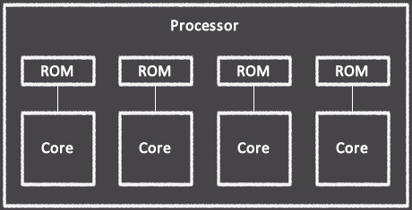
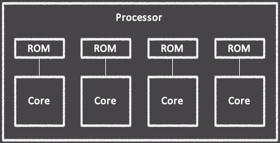

Multi-core Architecture
The Tonium processor can execute multiple program ROM's in parallel via the
instantiation of multiple cores. The number of cores instantiated is directly proportional
to the number of programs defined, whereby each program is executed by a single core. The total
number of cores that can be instantiated is only limited by the floorspace available on a
given FPGA chip, though an increase in the number of cores will result in an increase in
compilation and synthesis time.

The xT50 assembly and Tranquil languages use different syntax for writing multi-threaded code. See their respective documentation regarding for more details.

The xT50 assembly and Tranquil languages use different syntax for writing multi-threaded code. See their respective documentation regarding for more details.